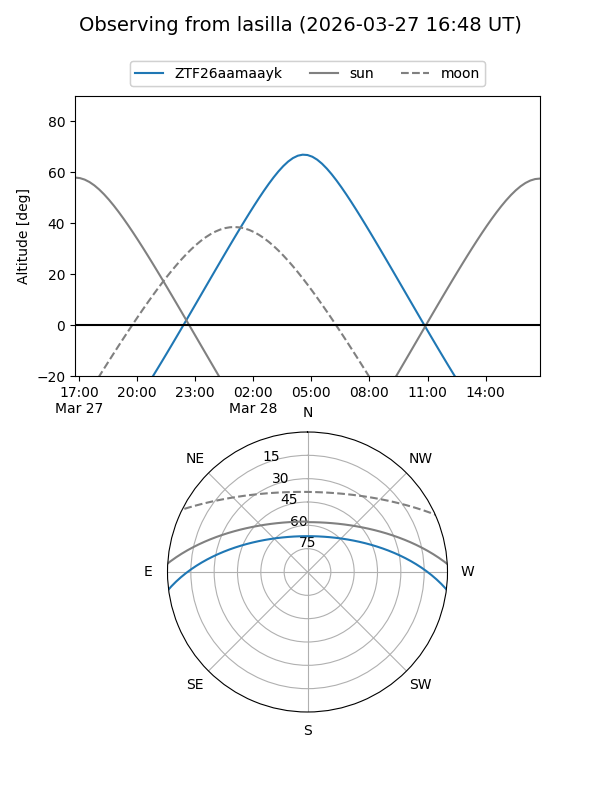
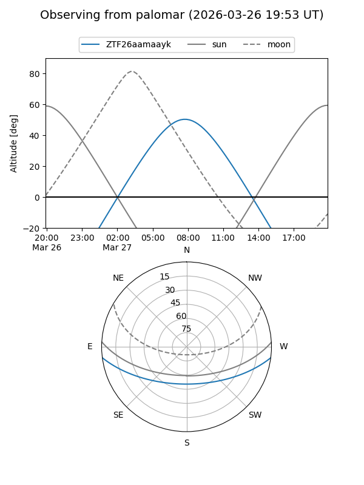

ZTF26aamaayk
Target ZTF26aamaayk at 2026-03-27 09:48
Aliases and brokers:
FINK: link
Lasair: link
ALeRCE: link
alt names
ZTF26aamaayk (ztf,fink_ztf)
Coordinates:
equatorial (ra, dec) = 183.7452,-6.07379
equatorial (HMS+DMS) = 12:14:58.86,-06:04:25.65
galactic (l, b) = (286.7235,+55.64645)
Flags:
Photometry:
last ztfg=17.61
1 ztfg detections
Lightcurve
Visibility


Additional plots